概要
最近のゲームやアプリケーションでは剛体同士の衝突などを物理法則に従って計算する物理シミュレーションがよく使われている． 本実験テーマではオープンソースの物理シミュレーションエンジンを使ったアプリケーションを作成することで， 物理シミュレーションの基礎と物理エンジンを使ったプログラミングを学ぶ．
物理シミュレーションエンジンとは
物理シミュレーションエンジン(もしくは，物理エンジン)は， 主にゲームを作成する際に，ゲーム内における物体の物理運動をリアルに再現することを目的とし， そのために，質量・速度・摩擦・風といったものを物理法則に基づきシミュレーション (物理シミュレーション)するゲームエンジンの一種である． 物理エンジンを用いないこれまでのCGアニメーションやゲームでは， 物体の動きは作成者が決めた軌跡に限定されており， リアルな振る舞いとなるかは作成者の技量に依存していた． 物理エンジンではいくつかのパラメータと初期位置を与えれば， 物体の動きを現実のものと同様になるようにエンジンが計算してくれるため， 作成者の技量に依存する部分を減らし， 誰でも簡単にリアルなアニメーション，ゲームを作成可能になる．
物理エンジンの主な機能として，
- 剛体の運動(Dynamic and Kinematics Rigid Body)の計算
- 物体同士の衝突検出(Collision Detection)
があげられる． 剛体とは，全く変形しない理論上の物体で，その運動を ``並進運動'' と ``回転運動'' に限定することが出来る． 一般的に並進運動は3次元ベクトル，回転は3x3の行列，もしくは四元数を用いて表される． 衝突判定では主にこの剛体同士の衝突を判定し，それに応じた反作用力を与え， 剛体運動として衝突応答を処理する．
このほかにも物理エンジンによっては，
- 布やゴムのように変形する物体(弾性体)
- 水のような流れる物体(流体)
などのシミュレーションにも対応している．


剛体シミュレーションと流体シミュレーション
物理シミュレーションの基礎
ここでは物理シミュレーションの基礎として，剛体の並進運動について説明する． 剛体のシミュレーションは基本的に運動方程式に基づき，それを離散化してコンピュータで解かせることで， 剛体の運動を計算している．
まず，球形状の剛体を考える(つまり，形状の重心を中心とした回転は考えない)．
球の場合，その中心座標の変化だけを捉えればよい．
中心座標をベクトル表記で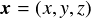とすると，その速度(Linear Velocity)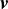は時間 での微分，
での微分，

と計算される．いま，球がある時刻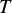での位置 から時間によって変化する速度
から時間によって変化する速度 で移動するとすると，
から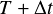までの移動ベクトル
で移動するとすると，
から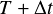までの移動ベクトル は積分で表される．
は積分で表される．

これより，ある時刻での球の位置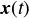から
離散時間 (これをタイムステップ幅と呼ぶ)後の位置
(これをタイムステップ幅と呼ぶ)後の位置 が求められる．
これを繰り返すことで，初期位置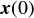からどのような軌跡で物体が変化するかを計算するのが，
運動する物体のシミュレーションの基礎となる．
が求められる．
これを繰り返すことで，初期位置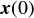からどのような軌跡で物体が変化するかを計算するのが，
運動する物体のシミュレーションの基礎となる．
さて，ここで問題となるのは，との積分をどうやって計算するのか？ ということである．
それぞれ，運動方程式，時間積分の離散化と分けて説明する．
運動方程式
高校物理でニュートンの第二法則(ニュートンの運動方程式)というのを習ったのを思い出してほしい．
質量 の物体にかかる力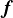と加速度
の物体にかかる力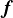と加速度 の関係が以下の方程式で表される．
の関係が以下の方程式で表される．

加速度(Acceleration)と力(Force)が比例する，もしくは，運動量 の時間微分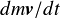が力である
(質量が一定なら上の式に一致することに注意)．
速度は加速度の時間積分で表されるので，速度から位置を計算したときと同じように積分を使うとある時刻での速度が求められる．
の時間微分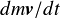が力である
(質量が一定なら上の式に一致することに注意)．
速度は加速度の時間積分で表されるので，速度から位置を計算したときと同じように積分を使うとある時刻での速度が求められる．
剛体にかかる力は重力や物体に当たったときの反力，ユーザが与えた力などである．
ただし，力は大きさだけでなく，力が作用した時間も重要になる．
ニュートンの運動方程式をの間で積分すると，
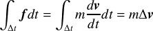
タイムステップ幅の間(つまり，から の間)，が一定だったとすると，
の間)，が一定だったとすると，

で速度変化が求められる．このときの を撃力という．
を撃力という．
時間積分の離散化
の積分は，もしが連続的に与えられる(あらゆる時刻での正確な値が与えられる)ならば，
数値積分法とより細かなタイムステップ幅を使って高精度に計算できるが，
これはあまり一般的ではない．
なぜかというと，もやはり離散的に与えられることがほとんどであり，
計算速度の点でも問題になるからである．
ではどうするかというと，ある仮定をおいて式を単純化してしまう．
最も簡単なのは，速度がからの間から変化せず一定であるとする仮定を置く方法である．
この仮定ではの間，位置が線形に変化する(直線的に移動する)とするのと同義である(下図参照)．

離散化
そうすると，

と現在の速度のみを使って次のステップの速度を求めることができる．
この方法は前進オイラー法(forward Euler method)と呼ばれる．
速度ベクトルが一定の場合は，この方法でもよいが，
いろいろな方向に動き回り，その速度も非線形に変化する運動の場合(ほとんどの運動がそう)は誤差が大きくなる．
下の図において，のときの座標値が直線近似した場合と真値でかけ離れていることが分かる
しかし，前進オイラーは最も単純で分かりやすい方法であり，を極限まで小さくすれば真値と一致する
という特徴もあるため，広く用いられている．

前進オイラー法
前進オイラーではでの速度のみを用いたが，
での速度も用い，両者の平均を使って計算するとすると，
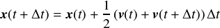
となる．これは改良オイラー法(modified Euler method)と呼ばれる． このほかにもルンゲ・クッタ法，アダムス・バシュフォース法，完全陰解法などがある．
練習問題1
サンプルプログラムをダウンロードし， 以下の手順でビルド，実行してみよ．
- ダウンロードしたファイルを解凍後，src/sphere/sphere_vs2017.slnもしくはsrc?sphere/sphere_vs2019をVisual Studioで開く (自分の環境に合わせたファイルを開くこと．VS2022の場合はどちらでもよいがプロジェクトの再ターゲットを行うことになる)．
- 警告がいくつか出てくることがあるがすべて"はい"をクリックし， ソリューションエクスプローラーからsphereプロジェクトをダブルクリックしてフォルダを開いていき，main.cppを開く (以下の課題ではこのファイルのソースコードを変更していくことになる)．
- メニューからビルド->sphereのビルドを選択してビルドする(メニューにビルドがない場合は ツール->設定->上級者用の設定 を選択)．
- デバッグ->デバッグなしで開始でプログラムを実行する． もし*.dllファイルがありませんといった警告が出たらbinフォルダにあるdllファイル2つをsrc/sphere/Debugフォルダにコピーする)．
Makefileとg++を用いたMac環境でのビルド方法についてはここをクリック
- パッケージマネージャ Homebrew をインストール(参考:https://qiita.com/zaburo/items/29fe23c1ceb6056109fd )
- ターミナルからHomebrewで必要なパッケージをインストール
$ brew install glfw $ brew install glew
-
ターミナルでMakefileがあるフォルダに移動し，
$ make
でビルド(ビルド済みのファイルを削除してリセットする場合は`$ make clean`) -
ビルドに成功したら(特にエラーメッセージが出なければ)，
$ make run
で実行
1,2の手順はそれぞれインストール済みならばスキップしても良い(2回目以降のビルドにおいても)．
全学計算機システムのリモートデスクトップ環境で実行している場合など，3のビルドにおいて，Windows SDKのバージョン違いによって， 「ソースファイルを開けません～」というエラーがたくさん出るかもしれない． その場合は，メニューから「プロジェクト」→「ソリューションの再ターゲット」をクリックして， 自分の環境のWindows SDKに合うようにプロジェクトの再ターゲットを行おう(出てきたウィンドウでそのまま"OK"をクリック)．
練習問題2
サンプルプログラムに球の軌跡を線で描画する機能を追加せよ．
練習問題3
球がある一定の高さ以下になったら，そのy方向速度を反転させることで，床での反発をシミュレーションしてみよ． なお，この際，反転した速度に反発係数([0,1])を掛けること．
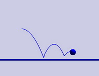
球の反発の例
練習問題4(option)
改良オイラー法を実装し，前進オイラー法での球の軌跡と比べてみよ(時間ステップ幅を大きくしてみると分かりやすくなる)． また，改良オイラー法は2次のルンゲ・クッタ法としても知られている． ルンゲ・クッタ法について調べ，4次のルンゲ・クッタ法も実装してみよ．
回転運動
点や球，2次元での円のように回転してもその形状が変化しない場合と異なり， ほとんどの形状は回転による姿勢の変化を考慮しなければならない． ここでは，回転・姿勢の表現方法と回転に対応した運動方程式について説明する．
回転・姿勢の表現方法
物体が元の姿勢からどの程度回転したかを表す最も分かりやすい方法はオイラー角（Euler Angle)を用いる方法である．
オイラー角では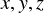軸まわりの回転角 で姿勢を表す
(それぞれ，ヨー(yaw), ピッチ(pitch)，ロール(roll)角とも呼ぶ)．
で姿勢を表す
(それぞれ，ヨー(yaw), ピッチ(pitch)，ロール(roll)角とも呼ぶ)．
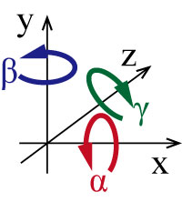
オイラー角
また，各軸周りの回転を回転行列で表すと以下のようになる．
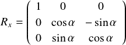
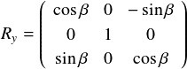

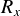はyz平面，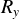はxz平面， はxy平面上での回転である．
これらの回転を順番に掛けることで回転による姿勢変化を表現できる．
はxy平面上での回転である．
これらの回転を順番に掛けることで回転による姿勢変化を表現できる．

また，任意軸 周りに角度
周りに角度 だけ回転する場合の回転変換行列は，
だけ回転する場合の回転変換行列は，
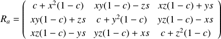
と表される．ここで， であり，軸を表すベクトル(x,y,z)は単位ベクトルとする．
この場合の回転変換は単純に，
であり，軸を表すベクトル(x,y,z)は単位ベクトルとする．
この場合の回転変換は単純に，
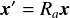
である．

任意軸周りの回転
練習問題4
サンプルプログラムで球の代わりに立方体(glutSolidCube(GLdouble size))を描画するように変更し，
自分で設定した軸(たとえば，(0,0,1))周りに回転させよ．
ただし，glRotateは使わずに回転行列を計算して直接設定すること，また，回転行列を計算する際に用いる軸は単位ベクトルでなければならないので注意すること．
ヒント:任意軸周りの回転行列をプログラム中で計算できるようにし，glMultMatrixf(const GLfloat *m) で回転行列を設定．
角度はTimer関数内で増減させる．OpenGLにおける変換行列は4x4の行列を使って回転・平行移動・スケーリングをまとめて一つの行列で表している．
glMultMatrixに渡す変数はGLfloat型(float型でもよい)の大きさ16の配列で，行列の各要素は以下のように格納されている．
| m[0] m[4] m[8] m[12] | | m[1] m[5] m[9] m[13] | | m[2] m[6] m[10] m[14] | | m[3] m[7] m[11] m[15] |
今回は回転行列を適用するので，0,1,2,4,5,6,8,9,10のところに値を入力しそれ以外は，m[3]=m[7]=m[11]=m[12]=m[13]=m[14]=0, m[15]=1とすること．
四元数
オイラー角，回転行列を用いた方法はOpenGL等のグラフィックスAPIでも一般的に使われている手法ではあるが， 行列の積をいちいち計算しなければならず，また，各剛体ごとに9つの要素を保持しなければならない． これらの欠点を解決するのが四元数(Quaternion)である．
四元数はその名の通り，4つの要素を持つベクトルのようなものである．
回転軸(3要素)とその軸周りの回転角(1要素)で構成される．
任意軸周りの回転を表す四元数は以下となる．

四元数は複素数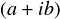を多次元に拡張したようなものになっている．
四元数をベクトル表記ではなく を使って表すと，
を使って表すと，

 という規則に従うと四元数同士の積は，
という規則に従うと四元数同士の積は，

となる．
さて，四元数にも単位四元数というものが存在する．回転角が0のとき，上の四元数の定義式から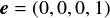となることが分かる．
これが単位四元数である． となるとき，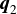は
となるとき，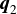は の共役四元数(
の共役四元数( と表す)であるといい，
その値は，
と表す)であるといい，
その値は， となる
(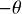回転を表す四元数)．
となる
(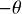回転を表す四元数)．
この共役四元数を使うと，座標xの任意軸周りの回転変換は以下となる．
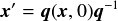
ここで，(x,0)は3次元ベクトルxに4つめの要素0を追加した4次元ベクトルを表す．
四元数についてより詳しく知りたい人は自分で調べてみること．
多くの物理シミュレーションエンジンはこの四元数(Quaternion)を用いており，
四元数を用いた演算や回転行列・オイラー角との相互変換機能などを備えている．
(注意として，行列による位置姿勢の表現は投影変換のように物体の変形を伴うような変換も統一的に表現できるため，
それらを扱うOpenGLなどのグラフィックスAPIでは四元数ではなく行列が用いられている．)
練習問題5
四元数を用いて立方体を任意の軸周りに回転させてみよ．なお，四元数 から回転行列への変換式は以下．
から回転行列への変換式は以下．

ヒント：回転軸を表すベクトルと1ステップあたりの回転角を表す定数と現在の回転角を表す変数を定義して， 毎ステップ，回転角を更新，回転軸も使って四元数に変換してやればよい．
回転の運動方程式
並進運動では剛体の位置と速度，加速度，力で運動を表現した．
回転運動ではそれぞれ姿勢，角速度(Angular Velocity)，角加速度(Angular Acceleration)，トルクで運動を表現する．
2次元の場合は姿勢は1つの角度で表される．
そのとき，角速度 ，角加速度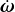はそれぞれの時間微分となる．
，角加速度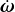はそれぞれの時間微分となる．

3次元の場合はを四元数 で置き換えればよい．
角加速度とトルクを使うとニュートンの第2法則の回転運動版が定義できる．
で置き換えればよい．
角加速度とトルクを使うとニュートンの第2法則の回転運動版が定義できる．

ここで， は慣性テンソルと(2次元なら慣性モーメントとも)呼ばれ，回転のしにくさを表す．
これは並進運動の場合の質量に相当し，行列の形で表される(質量はどちらの方向でも変わらないが，
回転のしにくさは異なるためスカラーではなく行列になっている)．
この式から角加速度は慣性テンソルの逆行列とトルクを使って計算することができる．
は慣性テンソルと(2次元なら慣性モーメントとも)呼ばれ，回転のしにくさを表す．
これは並進運動の場合の質量に相当し，行列の形で表される(質量はどちらの方向でも変わらないが，
回転のしにくさは異なるためスカラーではなく行列になっている)．
この式から角加速度は慣性テンソルの逆行列とトルクを使って計算することができる．
回転の場合の運動方程式が分かったのであとは並進運動と同じく，前進オイラー法などで時間積分を離散化してやればよい． 前進オイラー法の場合は，
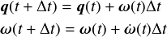
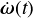はそれぞれのステップにおいて，かかっているトルクから直接計算すればよい． 慣性テンソルは剛体であるならば形状が変化しないのであらかじめ計算しておく． 球や直方体，円柱など基本的な形状ならば直接計算できる． 三角形ポリゴンで表された複雑な形状の場合は，重心を中心とし，各三角形ポリゴンを底面とする三角錐の集合として慣性テンソルを計算する． 慣性テンソルの計算に関しては四元数の時と同様に物理エンジン側で演算関数が用意されていることがほとんどである． (かといって，理論を知らなくてもよいわけでない．中で何が行われているかを知っていれば， 物理エンジンを使いこなすのは容易である)．
上の式は四元数を で変化させているが，はベクトルなのでこのまま式を計算はできない．
は角速度であるので，物体の姿勢は1ステップで
で変化させているが，はベクトルなのでこのまま式を計算はできない．
は角速度であるので，物体の姿勢は1ステップで だけ変化する(回転する)ことになる．
だけ変化する(回転する)ことになる．
 をオイラー角とすると，も各軸周りの回転速度
をオイラー角とすると，も各軸周りの回転速度 と定義できる．
そうするとオイラー角から四元数への変換を行えば良いことになる．
と定義できる．
そうするとオイラー角から四元数への変換を行えば良いことになる．
回転を表す四元数の定義(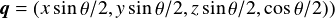から， x軸周りに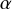だけ変化する場合の四元数は，

同様にして， も求めて，その三つを掛け合わせると，
オイラー角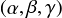による回転を表す四元数が以下のように定義できる．
も求めて，その三つを掛け合わせると，
オイラー角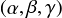による回転を表す四元数が以下のように定義できる．

つまり，上の四元数に対するオイラー前進法の式は，ベクトルの各要素を として上記で四元数
として上記で四元数 に変換して，
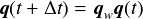として四元数を更新するという式に置き換えられる．
に変換して，
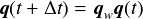として四元数を更新するという式に置き換えられる．
練習問題6(option)
四元数と回転の場合の運動方程式を用いて，初期に与えたトルクで回転しながら放物運動する剛体(立方体)をシミュレーションせよ．
なお，各辺が軸に平行で長さが である直方体の重心周りの慣性テンソルは以下で与えられる．
である直方体の重心周りの慣性テンソルは以下で与えられる．
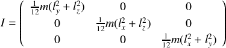
ヒント：練習問題1のサンプル中で初期ステップ(g_iStep == 0)で力から速度を計算したように，
初期ステップにトルクと慣性テンソルの逆行列から
角加速度と初期角速度を求める．求めた初期角加速度で等速回転すると仮定すると，
から上記の方法で1ステップあたりの回転を表す四元数が得られ，それにより姿勢を表す四元数を更新すれば良い．